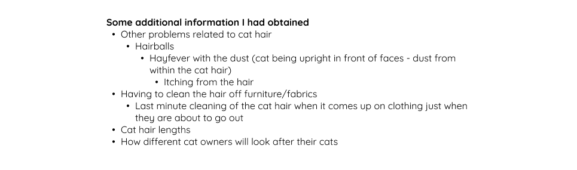
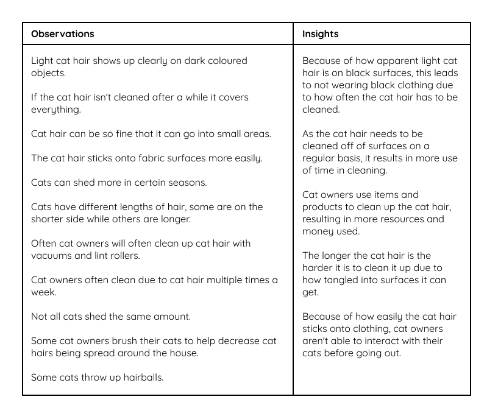

Discover Phase
Problem Space
I started off the discovery phase by doing the initial problem-solving brainstorming, where I looked into what I had spent around 1000 hours on and problems I have encountered over 100 times. I did this by listing and highlighting ones to narrow them down further.
This led to my problem space of digital drawing/illustration, with the main problem being my digital drawing tablet is broken.
Then my partner and I shared the problem via Zoom.
This was the paragraph about my client's problem. From this, I did a basic breakdown of my client's problem.
Cat hair Trouble
This is a problem that has been bothering me for a long time. Just now as I type, I can see a cat hair stuck to my laptop screen. The cat hair appears all over my house, especially on black items, and is especially noticeable. Because of this problem, I also started to stop wearing black clothes. I can't hug my cat before going out, If I did, I would have hair all over my clothes and pants, even if they were white. I need to take the vacuum cleaner every day to clean up (brought a special version for pet hair), if more than two or three days without cleaning, the floor will be unbearably dirty. Also afraid to let the cat go to bed.
Little story: One day my computer suddenly broke down and wouldn't turn on. When I took it in for repair, the maintenance staff took it apart and found a lot of cat hair inside, and he said it looked like the computer was broken because of the hair. But in everyday life, my cat does not sleep on the computer, so I want to know how to deal with the invisible, hair floating in the air? (Very heartbroken)
Empathy Conversations
I had quick empathy conversations with three different people who are cat owners.
I had created questions about their cat, how the cat is cared for, and methods of cleaning/solving/dealing with the problem of cat hair.
I had done this step by creating questions and asking them. The full answers can be seen within the google doc here: empathy conversations

Obervation/Photojournaling
Secondary Research
I then did some secondary research on the topic which the whole research can be seen in the google doc: Secondary Research
Main points I looked into were how people would be dealt with cat hair, and what exists as an invention for the cat hair problem.
Summary
I found this phase interesting, as I was able to look into and research a topic I wasn't that knowledgeable about.
I had found from the empathy conversations that I knew little about the topic, and so they were able to help me in explaining what they had to deal with in terms of cat hair. Such as how often they shed, how it increases with different seasons, and how there are different lengths of cat hair.
From there, I found habits of cat owners that they shared, like how often they had to clean their living spaces due to the cat, with some of them having to clean it more often than others. Some didn't have to clean more than they already with weekly cleanings of their own house, while others had to vacuum more than they usually do due to the cat hair. Due to how often they have to clean up, this takes up time for the cat owners. All of the cat owners used a vacuum to clean up the cat hair, with some of them owning a pet attachment tool that helped them clean in smaller areas and picks up the cat hair more easily. A lot of them also used lint rollers, especially for textiles. This adds to the cost of cleaning up the cat's hair. This also links back to one of my empathy conversations where they needed to clean up the cat hair from their clothing before going out and ran out of their lint roller, resulting in them having to vacuum up the hair from their clothing. I also asked questions about how the cats were cared for, such as food, bathing and brushing the cat, to give extra context to each of their cats.
The differences in how the cat owners would clean up showed how some cats were more or lower maintenance than others. This can be seen in how much the cat owner that had owned a cat with long hair had to clean, as the long hair made it harder to deal with it. I had also talked to them about other problems, such as having to deal with allergies, dust in the cat's hair, and hairballs.
Within the observational journal, I saw visually how apparent and noticeable the ginger and white coloured cat hair was on surfaces. With a lot of the cat hair is on textiles due to how easily tangled it is in it. This helped link further with how my client would avoid wearing certain colours of clothing due to how they showed clearly and how they weren't able to hug their cat before going out. From the client, I was able to observe how the cat hair is so fine/thin that it's able to fit in small places, such as within their laptop.
Within my secondary research, I had found ways that may help stop cat hair, as well as reasons why cat hair may be more of a problem for some people compared to others. I also found out about different innovations and things that were made with cat hair in mind.
Below is the list of Observations and Insights I had gained
